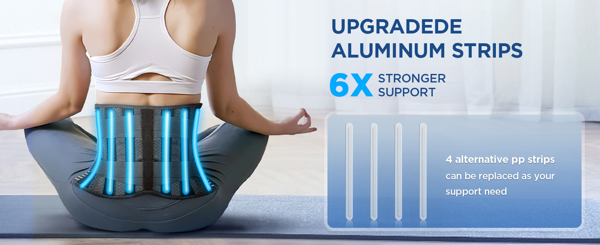
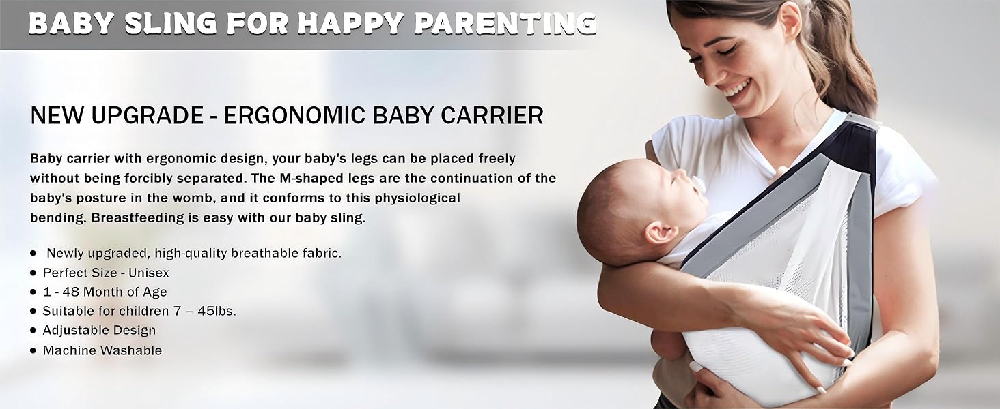
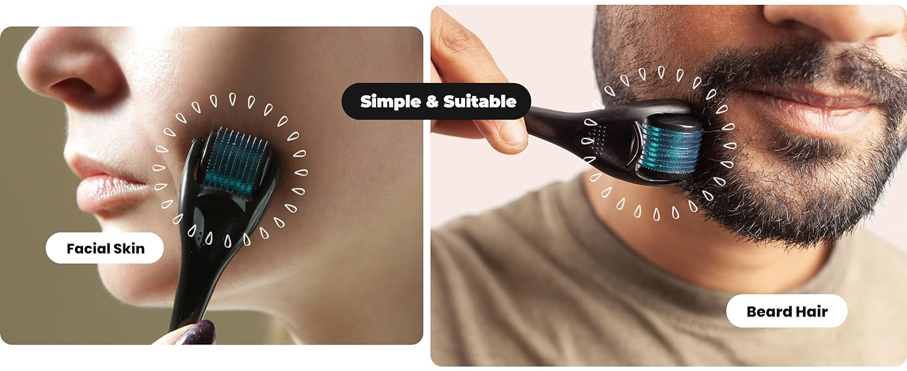
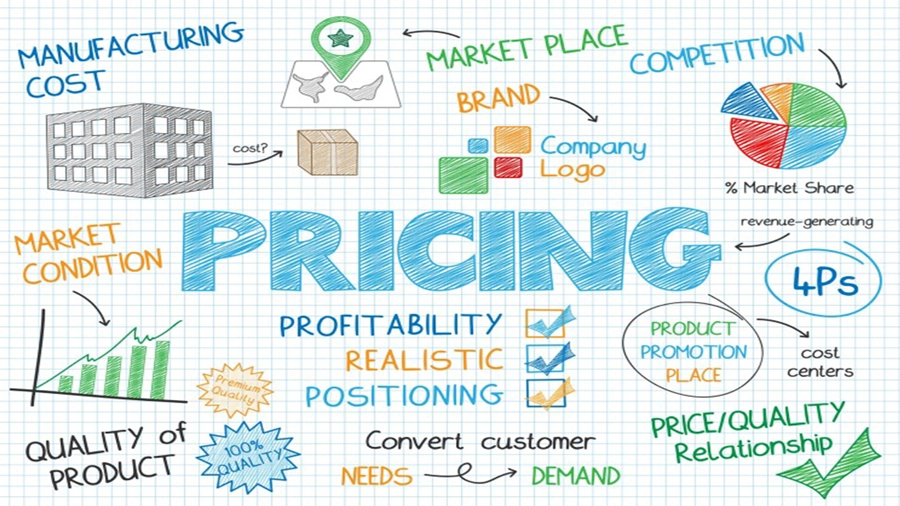
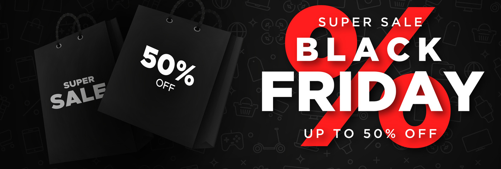

In the ever-evolving landscape of e-commerce, staying ahead of the competition requires strategic planning and insightful research. The key to success in dropshipping lies in identifying winning products that resonate with consumers. This blog post will guide you through effective strategies for product research, ensuring your dropshipping business thrives in the coming year.
Table of Contents
- 1. Understanding Market Trends and Winning Products
- 2. Key Characteristics of Profitable Items
- 3. Product Research Methods
- 4. Tools for Product Discovery
- 5. Validating Product Potential
- 6. Analyzing Competition
- 7. Pricing Strategies
- 8. Common Mistakes to Avoid
- 9. Seasonal Trends and Timing
- 10. Taking Action
1. Understanding Market Trends and Winning Products
The first step in successful product research is understanding market trends. Analyzing current and emerging trends helps you identify products that are gaining popularity. Utilize tools like Google Trends and social media platforms to gauge consumer interest and predict future demand. Use Google Trends for real-time data on product interest. Monitor social media platforms to spot viral products. Stay updated with industry reports for comprehensive trend analysis.
A winning product in dropshipping is an item that meets specific criteria:
- Solves a clear problem or fulfills a strong desire
- Has a viable profit margin (typically 30% or higher)
- Shows consistent demand
- Appeals to a specific target audience
- Has marketing potential
- Can be shipped efficiently
These products often generate significant sales volume and maintain profitability over time. They're not just trending items but products with sustainable demand.
2. Key Characteristics of Profitable Items
Problem-Solving Capability
The most successful products address specific pain points or needs. They should either:
- Make life easier
- Save time or money
- Improve health or wellness
- Enhance lifestyle
- Provide entertainment value
Unique Value Proposition
Your product should have:
- Distinctive features
- Clear benefits
- Something that sets it apart from competitors
- An emotional connection with buyers
Price Point Sweet Spot
Optimal pricing typically falls within these ranges:
- $20-$50 for impulse purchases
- $50-$200 for considered purchases
- High enough to ensure profitable advertising
3. Product Research Methods
Social Media Mining
- Monitor trending products on Instagram, TikTok, and Pinterest
- Analyze engagement rates on product-related content
- Study successful competitors' offerings
- Track hashtag performance
Market Research Platforms
- Amazon Best Sellers
- AliExpress trending products
- eBay watch count
- Google Trends analysis
Consumer Behavior Analysis
- Search volume trends
- Shopping patterns
- Seasonal demands
- Geographic preferences
4. Tools for Product Discovery
Essential Research Tools:
- Google Trends
- Jungle Scout
- Helium 10
- Sell The Trend
- Niche Scraper
- Facebook Ads Library
Tool Purposes:
- Product validation
- Competition analysis
- Price comparison
- Trend tracking
- Marketing research
5. Validating Product Potential
Market Validation Checklist
- Check search trends over 12 months
- Analyze competitor sales data
- Review customer feedback and ratings
- Calculate potential profit margins
- Assess shipping complexity
Key Validation Metrics
- Monthly search volume: >1,000 searches
- Competition level: Medium
- Profit margin: >30%
- Customer rating: >4.0 stars
- Return rate: <10%
6. Analyzing Competition
Competitor Analysis Framework
- Identify direct competitors
- Analyze pricing strategies
- Study marketing approaches
- Review product positioning
- Examine customer service standards
Market Gap Identification
Look for opportunities in:
- Pricing gaps
- Feature improvements
- Service quality
- Marketing angles
- Geographic markets
7. Pricing Strategies
Pricing Formula
Product Cost + Operating Expenses + Marketing Costs + Desired Profit = Retail Price
Pricing Considerations
- Market positioning
- Competitor pricing
- Perceived value
- Customer expectations
- Volume potential
Common Pricing Models
- Cost-plus pricing
- Value-based pricing
- Competition-based pricing
- Dynamic pricing
8. Common Mistakes to Avoid
Critical Errors
- Ignoring shipping times and costs
- Choosing oversaturated products
- Neglecting product quality verification
- Poor supplier communication
- Inadequate market research
Prevention Strategies
- Test products personally
- Build supplier relationships
- Monitor product quality
- Track competitor activities
- Keep detailed analytics
9. Seasonal Trends and Timing
Annual Shopping Events
- Black Friday/Cyber Monday
- Christmas Holiday Season
- Back to School
- Valentine's Day
- Summer Season
Planning Timeline
- 3 months before: Product selection
- 2 months before: Supplier agreements
- 1 month before: Marketing preparation
- 2 weeks before: Launch promotion
10. Taking Action
Implementation Checklist
- Choose your niche
- Select 3-5 potential products
- Verify suppliers
- Set up your store
- Create marketing plan
- Launch and monitor
Success Metrics
- Conversion rate: >2%
- Profit margin: >30%
- Customer satisfaction: >90%
- Return rate: <10%
Frequently Asked Questions
Q: How much money do I need to start?
A: Start with $500-$2000 for initial product testing and marketing.
Q: How often should I look for new products?
A: Conduct product research weekly and major market analysis monthly.
Q: What's a good profit margin for dropshipping?
A: Aim for 30-40% minimum profit margin after all costs.
Q: How many products should I test initially?
A: Start with 3-5 products to test marketing and demand.
Q: How long should I test a product?
A: Test for at least 2-3 weeks with consistent marketing effort.